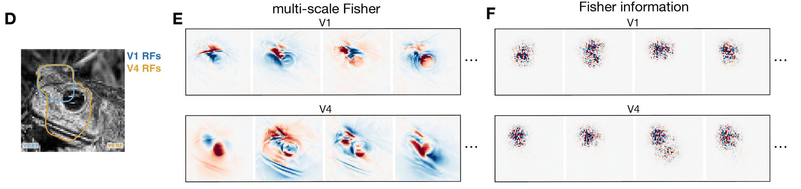
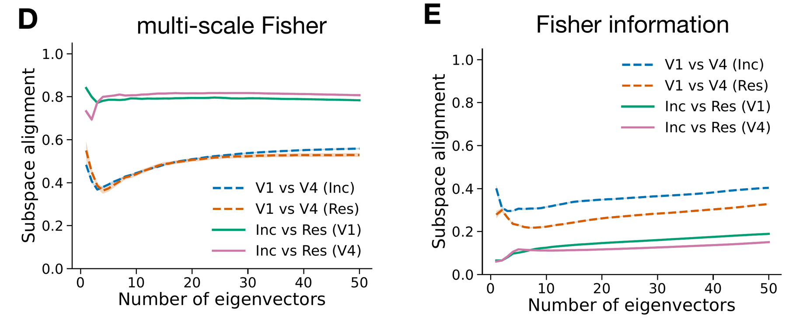
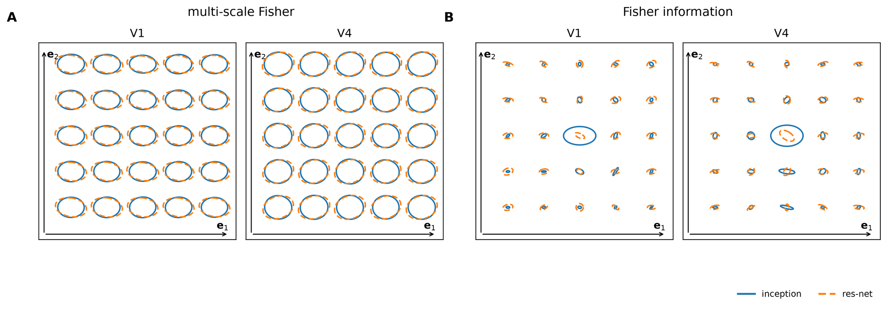
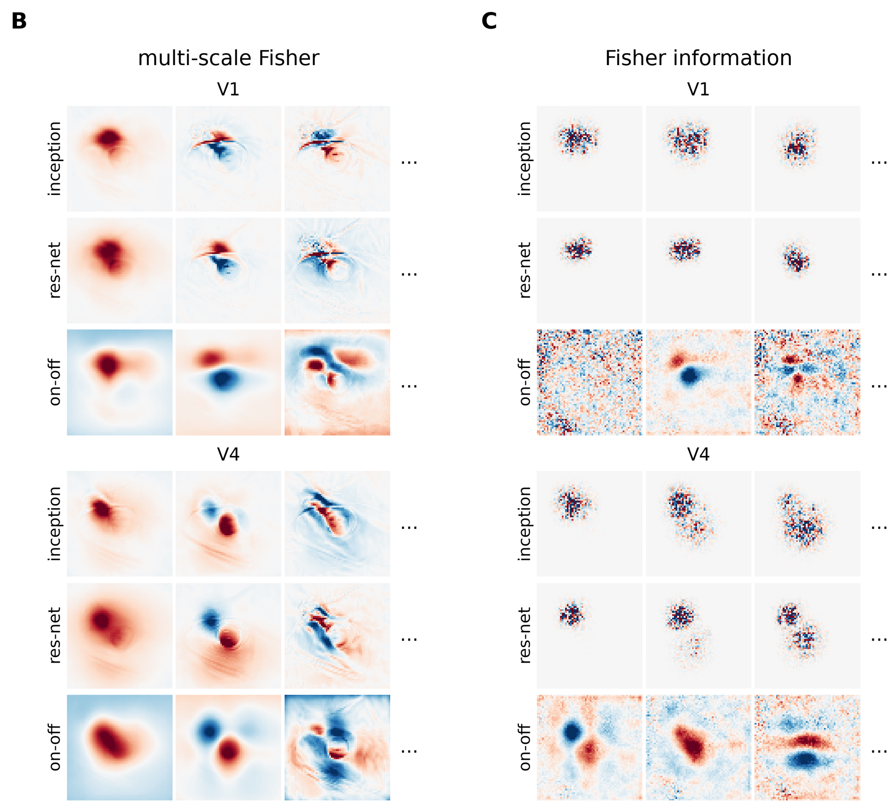
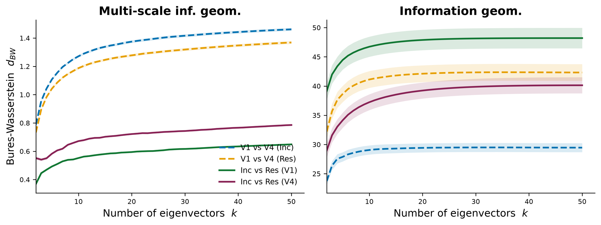

A multi-scale information geometry reveals the structure of mutual information in neural populations
A representational geometry with an exact link to mutual information: averaged over stimuli, half
the trace of its metric equals the information a population carries. It stretches stimulus directions that contribute
more to that information and contracts poorly encoded ones, from fine detail to global structure. For natural images it
can be estimated with a conditional diffusion model.
Move the image along an eigenvectorInception encoding model fitted to macaque V1 and V4
multi-scale Fisher · V1
multi-scale Fisher · V4
Fisher information · V1
Fisher information · V4
eigenvector
Image 1 of 1
The leading eigenvectors of the multi-scale metric change the image in ways natural images vary: local
brightness over the receptive fields, then edges and the outline of the eye. Those of the Fisher information add
high-frequency noise, which natural images rarely contain.
Exact link to information
Averaged over stimuli, half the trace of the metric equals the mutual information:
$I(R;X) = \tfrac12\langle \operatorname{tr} G(x)\rangle$.
Derived from first principles
The metric follows from how the geometry changes for an observer who sees only a blurred version of the stimulus. Coarse-grain the stimulus by adding Gaussian noise. Up to a constant factor, this
is the only metric that contracts at a rate set by the local response distribution and by what the responses encode.
It is also zero when the responses carry no information about the stimulus.
Practical for natural images
A conditional diffusion model gives Monte Carlo estimates of the metric's leading
eigenvectors for 64×64-pixel images. In V1 and V4 they are robust to differences in the encoding model fitted to the
same area; those of the Fisher information are not.
The idea in one neuron
The Fisher information measures how well a code separates nearby stimuli. Mutual information also depends
on how well it separates stimuli that are far apart. Three model neurons show the difference. Each encodes a scalar
stimulus with a Gaussian distribution, through one tuning curve with the same Gaussian response noise.
Tuning curves $f(x)$, noise $\sigma$Contribution of scale $t$ to $G(x)$, per unit $\log t$Distance from $x_0=-4$Mutual information (bits) and $\tfrac12\langle G\rangle$
The monotonic and single-peaked neurons have the same slope magnitude $|f'(x)|$ at every stimulus, so their Fisher
information $J(x)=f'(x)^2/\sigma^2$ and their Fisher distances are identical. Yet the single-peaked neuron responds in the
same way to stimuli on either side of its peak, so it carries less mutual information. The low-gain neuron has a quarter of
the monotonic neuron's Fisher information everywhere, the least of the three, but it carries more mutual information than
the single-peaked one.
The multi-scale metric captures both orderings. It coarse-grains the stimulus by adding Gaussian noise of variance $t$,
$x_t = x+\sqrt{t}\,z$. At each scale it takes the Fisher information $J_t$ of the coarse-grained likelihood
$p_t(r\mid x_t)$ and averages it over the noisy stimuli. It then integrates over all scales:
$$G(x)=\int_0^\infty \big\langle J_t(x_t)\big\rangle_{x_t\sim\mathcal N(x,\,t)}\,dt .$$
For $t>0$, $J_t$ depends on the responses to neighbouring stimuli within about $\sqrt t$ and on the stimulus distribution,
so $G$ reflects global as well as local structure. Distances under $G$ rank the three neurons as their mutual information
does. The identity $I(R;X)=\tfrac12\langle G(x)\rangle_{p(x)}$ also holds numerically: the bars show the mutual information
and the black ticks $\tfrac12\langle G\rangle$.
Estimating it for images
For natural images the coarse-grained likelihood $p_t(r\mid x_t)$ averages over every image that could have produced the
noisy image $x_t$, which cannot be computed directly. A conditional diffusion model, trained to denoise images given neural
responses, gives the posterior mean $\hat x(x_t, r)=\mathbb E[x\mid x_t, r]$. Using Tweedie's identity,
$J_t(x_t)=\tfrac{1}{2t^2}\,\mathbb E\big[(\hat x(x_t,r)-\hat x(x_t,r'))(\hat x(x_t,r)-\hat x(x_t,r'))^\top\big]$ for two
independent responses $r, r'$. Responses are drawn at the denoised image $\hat x(x_t)$, an approximation that is most
accurate at fine scales. Averaging over scales, noisy images and response pairs gives a low-rank factor of $G(x)$ whose
singular vectors are its leading eigenvectors (Algorithm 1 of the paper).
Applied to macaque V1 and V4
Multi-unit activity recorded with Utah arrays in V1 and V4 of one macaque (one of the two in the dataset) during viewing
of 22,248 natural images from THINGS (Papale et al. 2025); the 50 most reliable channels per area. Each area is modelled by frozen ImageNet-trained features
(InceptionV3 or ResNet-50) with a per-channel spatial readout and Gaussian response noise close to the trial-to-trial
variability ($\sigma=0.22$). Test correlations are 0.75 (V1) and 0.71 (V4) for Inception, 0.78 and 0.70 for ResNet-50.
One conditional diffusion model is trained per area and encoder, on 100,000 grayscale 64×64 TinyImageNet images, each
paired with the encoder's predicted responses plus noise of the same $\sigma$.
Results
Different features in V1 and V4
The leading eigenvectors of $G(x)$ are image changes of the kind natural images contain. The first is a local change of
brightness over the receptive fields. The next ones are edges and fine detail in V1, and broader changes that follow
the object's shape in V4. The leading eigenvectors of the Fisher information resemble high-frequency noise confined to
the receptive fields, with no clear difference between the two areas.

Constrained by the data, not by the model
Two encoding models fitted to the same area agree on the leading eigenvectors of $G(x)$ more than one model fitted to
the two areas. For the Fisher information the ordering reverses, so its leading eigenvectors depend more on the
encoding model than on the recorded area. (Subspace alignment of the top $k$ eigenvectors, $k=2$ to 50, averaged over
200 held-out images.)

The same at every point of the field
The reference image is perturbed along the two leading eigenvectors of $G(x)$, and at each perturbed image both metrics
are projected onto that plane. The multi-scale ellipses change smoothly and stay broadly consistent between the two
models (Inception solid, ResNet-50 dashed). The Fisher ellipses change rapidly and differ between models.

More figures

Leading eigenvectors of $G(x)$ and $J(x)$ for each encoding model fitted to V1 and V4: Inception, ResNet-50,
and an ON-OFF model whose front-end has 12 physiologically motivated parameters. The ON-OFF model gives more interpretable Fisher eigenvectors,
but it predicts the responses poorly (test correlation 0.20 in V1, 0.13 in V4).

The same comparison with the Bures–Wasserstein distance between the reconstructed metrics, averaged over 200
held-out images. For $G(x)$, models fitted to the same area are closer than one model fitted to the two areas. For the
Fisher information the ordering reverses on average, though not for every pair of models.
Explore the eigenvectors
Pick a held-out natural image. Rows: geometry, area and encoding model. Columns: the image and the four leading
eigenvectors of the Inception model (red and blue: opposite signs of the image change). Each ResNet-50 tile shows the
ResNet-50 eigenvector (among its top 20) most similar to the Inception one above it, with its sign flipped to match
(eigenvectors are defined up to a sign). The multi-scale eigenvectors of the two models are similar; the Fisher ones are
not.
image1234
Use it on your own model
The multigeom package computes both metrics for any fitted PyTorch model of neural responses, and reproduces
the paper's analyses.
pip install multigeom
import multigeom
encoder = multigeom.load_encoder("inception", area="V1") # an encoder of the paper, fitted to macaque V1
responses = encoder.predict(images) # [N, 50] predicted neural responses, images [N, 1, 64, 64]
# The Fisher information J(x) of the encoder at an image x:
fisher = multigeom.compute_fisher(image=x, encoder=encoder, sigma=0.22, top_k=10)
Demo notebooks, from the first call to the paper's figures.
Understanding how neural population responses represent sensory information is a central problem in systems neuroscience.
One approach is to define a representational geometry on stimulus space in which distances reflect how reliably stimuli
can be distinguished from neural activity. However, different constructions of these distances can lead to qualitatively
different conclusions about the neural code. Here, we show that a unique Riemannian representational geometry emerges from
first principles governing how distances contract as stimulus resolution is lost through coarse-graining. This results in
a multi-scale extension of the Fisher information metric, capturing encoding structure from fine stimulus details to coarse
global distinctions. The resulting geometry is exactly related to the mutual information encoded by the population: well
encoded stimulus directions, those contributing more to mutual information, are expanded, whereas poorly encoded
directions are contracted. The metric tensor can be estimated using diffusion models, making the framework practical for
large neural populations and high-dimensional stimuli. Applied to visual cortical responses to natural images, the
eigenvectors of the metric tensor identify stimulus variations that contribute most to information transmission, yielding
interpretable features that are robust to modelling choices. Together, these results provide a principled,
information-theoretic framework for characterising neural population codes.
Citation
@inproceedings{azeglio2026multiscale,
title = {A multi-scale information geometry reveals the structure of mutual information in neural populations},
author = {Azeglio, Simone and Laquitaine, Steeve and Ferrari, Ulisse and Chalk, Matthew},
booktitle = {Advances in Neural Information Processing Systems},
year = {2026}
}